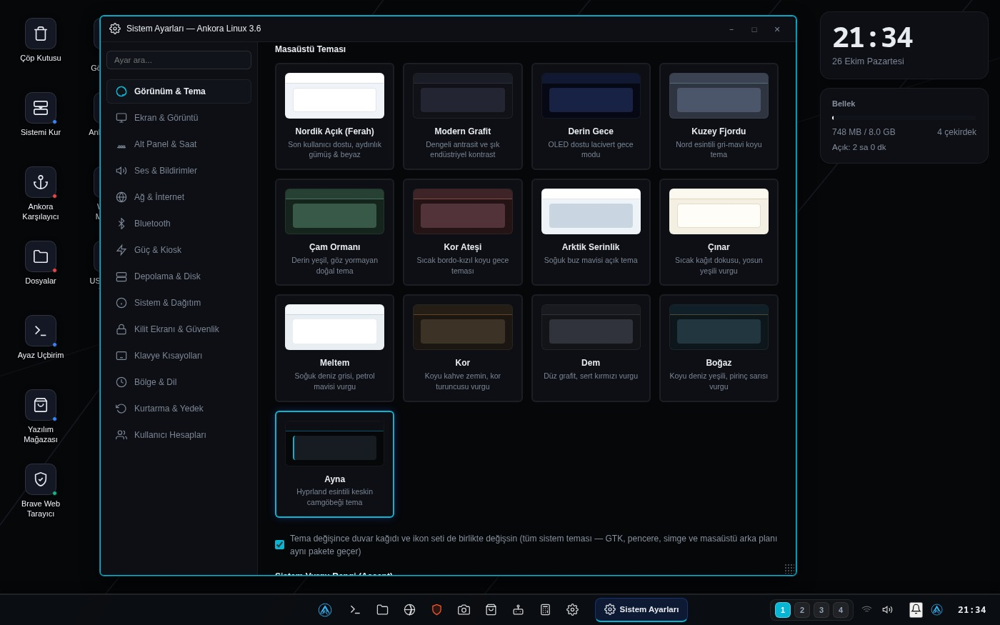
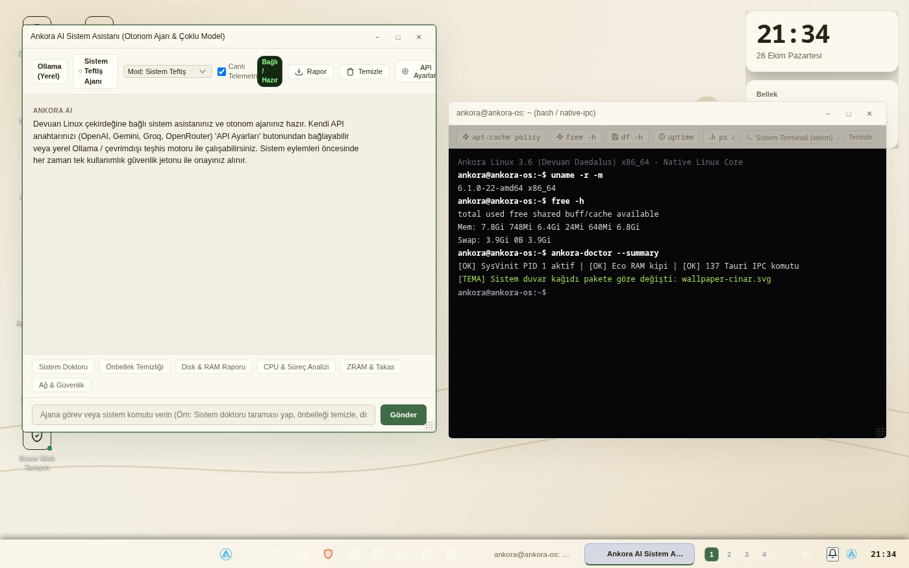
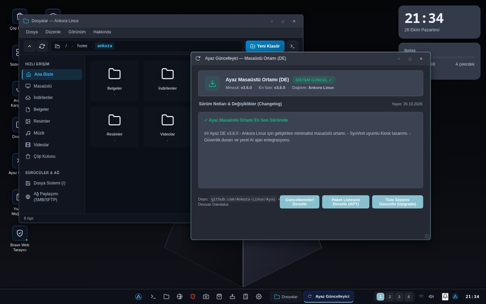

Возможности Ankora Linux 4.0
Ayaz DE 4.0 объединяет 18 встроенных окон, 14 системных тем, магазин на 278 пакетов и режим Eco RAM на базе быстрой связки WebKitGTK и Rust Tauri.
Главное в выпуске 3.6
Режим Eco RAM и ~750 МБ в простое
На ПК с памятью менее 4 ГБ снижает фоновую нагрузку и выгружает закрытые окна из памяти через 30 секунд.
Полностью на турецком
Установщик, рабочий стол, файловый менеджер, ИИ-ассистент и все системные настройки переведены на турецкий язык.
18 встроенных окон
Файловый менеджер, браузер, офисные заметки, просмотр PDF, калькулятор, запись USB/ISO и редактор меню уже установлены.
278 пакетов и поддержка ETAP
В магазине доступны повседневные программы, сертификат MEB, Scratch, GCompris, GeoGebra и драйвер для школьных досок.
14 пакетов системных тем
Один клик одновременно меняет оформление окон, панели задач, обои, набор значков и акцентный цвет.
Ankora ИИ и обновление в один клик
Локальная диагностика через Ollama или облачные API с одноразовым токеном подтверждения и беспарольное обновление.
Один клик меняет весь рабочий стол
В Ayaz DE 4.0 каждый пакет темы синхронно переключает панель задач, цвета окон, обои и набор значков.


18 готовых инструментов с первого запуска
Не нужно устанавливать базовые программы по отдельности.
- Веб-браузер (Ayaz и Brave)
- Файловый менеджер со строкой меню и автомонтированием USB
- Просмотр документов, PDF и фотографий
- Ankora Office и блокнот
- Калькулятор и создание снимков экрана
- Запись и форматирование USB и ISO
- Магазин приложений (278 пакетов)
- Системный ИИ-ассистент Ankora
- Системные настройки, центр обновлений и диспетчер задач

Хотите попробовать Ankora Linux 4.0?
Для установки понадобятся только флешка и несколько минут.